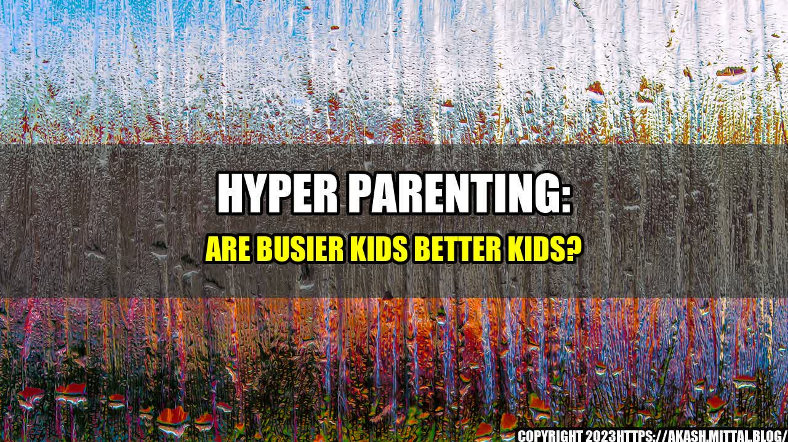

Hyper parenting: Are busier kids better kids?

It's Monday morning and Ann is already exhausted. She wakes up at 5 am and rushes to the gym for a workout before getting her two kids ready for school. She packs their lunches, helps them with their homework, and drives them to their after-school activities. Apart from school, her kids have soccer, ballet, piano, and French classes every week. Ann feels proud to have raised two multitalented and active children, but sometimes she wonders if her parenting style is too extreme.
Ann is one of the many parents who practice "hyper parenting," a style of parenting that emphasizes intense involvement and constant supervision. Hyper parents believe that their children need to be stimulated at all times and exposed to as many activities and experiences as possible. They want their kids to excel in every area of life – academics, sports, arts, social skills, and more.
The theory behind hyper parenting is that busy kids are better kids. By keeping their children occupied, hyper parents hope to prevent them from getting into trouble or being bored. They also believe that a busy schedule fosters discipline, time-management skills, and a sense of accomplishment in their kids. Furthermore, hyper parents see their role as a facilitator of their children's success, providing them with all the resources, guidance, and support needed to achieve their goals.
The dangers of hyper parenting
While hyper parenting may seem like a well-intentioned approach to raising successful kids, it can have negative consequences for both parents and children. Here are some of the dangers associated with hyper parenting:
- Stress and exhaustion – hyper parents tend to be overworked and overwhelmed, trying to juggle multiple responsibilities and commitments without a break. This can lead to physical and mental health problems, such as fatigue, anxiety, depression, and burnout.
- Pressure and anxiety – hyper parents often put a lot of pressure on their kids to perform and excel, which can create high levels of stress and anxiety. Children may feel like they are under constant scrutiny and judgment, and that their worth is based on their achievements rather than their inherent value.
- Overscheduling and burnout – children who are constantly shuttled from one activity to another may not have enough time to rest, play, or pursue their own interests. They may become overscheduled and burnt out, experiencing physical and emotional exhaustion, lack of motivation, and reduced creativity.
- Limited social and emotional development – hyper parents may focus so much on their children's academic and extracurricular achievements that they neglect their social and emotional development. Children may lack opportunities to interact with peers, explore their own identity, and develop healthy coping mechanisms.
A balanced approach
So, what is the alternative to hyper parenting? How can parents raise healthy, happy, and successful kids without succumbing to the pressures of hyperactivity? Here are three tips:
- Set realistic expectations – don't expect your children to be perfect or excel in every area. Recognize their strengths and weaknesses, and encourage them to pursue their passions and interests instead of yours.
- Allow for downtime – let your children have time to relax, play, and explore on their own. Don't overschedule their time or dictate their every move. Give them the freedom to be kids and discover their own path.
- Promote social and emotional development – prioritize your children's social and emotional growth by giving them opportunities to connect with others, express their feelings, and handle challenges. Encourage them to develop empathy, kindness, and resilience.
By following these principles, parents can strike a balance between stimulating their children and allowing them to be themselves. They can help their kids grow into confident, well-rounded individuals who are equipped to face whatever challenges come their way.
Learn more about successful parenting
Curated by Team Akash.Mittal.Blog
Share on Twitter Share on LinkedIn